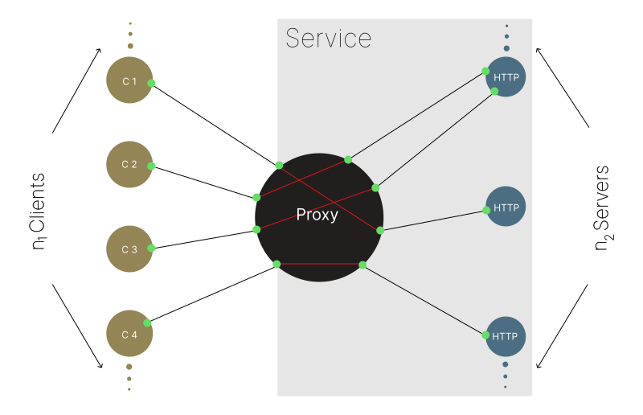

Featured Projects on GitHub
Dialog+
</TypeScript> </Node.js>
Dialog is a modular VoIP ➞ STT ➞ Agent-LLM ➞ TTS ➞ VoIP orchestration layer implementation that uses
conversational AI for handling voice calls. Dialog provides example implementations for each of the
artifacts that comprise a VoIP Agent application. You can use an implementation as-is, subclass it, or
implement one of the provided interfaces.
Socketnaut+
</TypeScript> </Node.js>

Socketnaut makes scaling native Node.js servers easy. A Socketnaut Service consists of a TCP proxy and
a pool of HTTP servers. Socketnaut will uniformly distribute incoming TCP sockets across the pool of
allocated servers. This strategy allows for both distribution and parallel processing of incoming
requests. Socketnaut consumes native Node.js servers (e.g., http.Server, https.Server, net.Server,
tls.Server); hence, if you know the Node API, you already know how to build applications on Socketnaut.
Socketnaut can be combined with performant Node.js web application frameworks (e.g., Fastify, Koa,
Express) in order to easily scale the main module of the web application.
A single Socketnaut instance can handle thousands of concurrent connections when running on capable
hardware. When under load, Socketnaut will spawn HTTP servers in order to meet demand and release
resources as demand declines; hence, Socketnaut mitigates its memory footprint by effectively managing
its thread pool.
Auto is an autonomous context window management implementation. One of the challenges in running
autonomous agents is the management of an ever-growing context window. This proof-of-concept
implementation gives the agent the capability to manage its context window autonomously.
A flowing application programming interface for creating Graphviz visualizations using Pydot. Pydot flow
makes it a little easier to assemble simple flowing graphs using Pydot.
Network⬄Services provides a simple and intuitive toolkit that makes scaling your app and connecting it
to the network easy. You can use it to transform an arbitrary application into a network-connected
scalable Service Application. You can connect to your Service App, from the same process or another
process, and call methods on it using a type-safe Service API.
Streams is an intuitive and performant type-safe logger built on native Node.js streams. You can use the
built-in logging components (e.g., the Logger, Formatter, Filter, ConsoleHandler, RotatingFileHandler,
and SocketHandler) for common logging tasks or implement your own logging Node to handle a wide range of
logging scenarios. Streams offers a graph-like API pattern for building sophisticated logging pipelines.
Memoiz provides a function decorator that can be used in order to augment functions or methods with
memoization capabilties. It makes reasonable assumptions about how and if to cache the return value of a
function or method based on the arguments passed to it. The decorator can be used on both free and bound
functions.
A JupyterLab extension for capturing JupyterLab events - deployed to the Coursera learning environment.
Port Agent+
</TypeScript> </Node.js>
Port Agent provides a simple and intuitive interface that makes inter-thread function calls easy. Port
Agent will marshal the return value or Error from the other thread back to the caller. The other thread
may be the main thread or a worker thread.
Scalability+
</TypeScript> </Node.js>
Scalability is a type-safe service scaling facility built on Network⬄Services. It provides a simple and
intuitive API for scaling Node.js modules using Worker threads. You can create a Service App in your
scaled module and call its methods from the main thread using a Service API. Scalability allows you to
easily transform your single threaded application into a type-safe multithreaded one.
A JS DSL for rendering HTML on the client or the server. The JS HTML Renderer provides a concise and
intuitive syntax for writing HTML using JavaScript.
The IMRaD-like Python project templates for data science projects.
In the data science domain projects are sometimes shared as an informal assemblage of scripts. This
repository proposes two IMRaD-like layouts that can be used for organizing a data science project. The
"Informal IMRaD-like Layout" is a Python project organized into materials, methods, and results
directories. The "Formal IMRaD-like Flat Layout" is a conventional installable Python flat-layout
project that can be built and distributed as a package and published to PyPI.
Neural-pleX is an object oriented educational/experimental neural network implementation. The
Neural-pleX API consists of Network, Layer, and Neuron constructors. The networks can be easily
visualized using a visualization library.